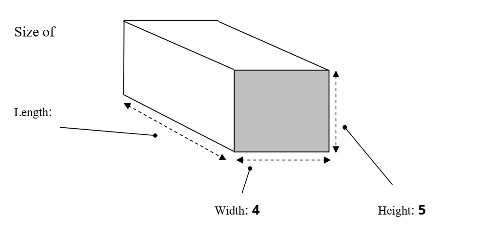

Before you begin
- You have about 90 minutes. Fill in your name and the date. The timer starts when you click Begin.
- There are 3 sections: Reading, Listening, Writing. Work through them in order.
- You cannot go back once you move to the next section.
- Reading: match statements to people (Q1–6), then answer Yes / No / Not Given (Q7–13).
- Writing: aim for at least 250 words. A live counter is available.
- Listening: each exercise will have an audio player; play it and fill in your answers as you listen.
- When time expires, your work is automatically submitted.
- This is not auto-graded. Your answer will be graded by me after submission and revealed to you at a later date.
- You are advised to download the answer sheet PDF after submission as a backup.
In a museum laboratory, Irene Good is studying pieces of silk from long-lost cloth found at archaeological sites in western Europe and central and south Asia. Good immerses the threads in a solution to tease apart the strands of protein. Then she uses several methods of biochemical analysis to examine the proteins' amino acids. What amino acids are present and the order they are in vary in different species of moths and therefore give a clue to the place where the silk was made.
"What I love most is being able, not just to alter what's known, but to improve access to the past based on very tiny pieces of evidence. Until recently, it was assumed that all [ancient] silk was from China," says Good, a specialist in fibre analysis and ancient-textile production and trade at Harvard University's Peabody Museum. "Scholars held that any silk dating from 2400 to 700 B.C. was carried afar on trade routes from China. But our work is now calling that assumption into question." Her findings indicate that the ancient silk came not from domesticated Chinese silkworms but from species of wild moths native to western Europe and Asia. "Now it looks like some of the silk industry outside China was earlier than thought and more widespread," Good says.
Today, Good and other researchers are applying high-tech methods of chemical analysis to ancient textiles and fibres to glean unique clues about past civilisations. The results are shedding light on many aspects of daily life among early peoples. Much of the insight is coming from minuscule samples of textiles, which archaeologists categorise as "fibre perishables". Until recently, these remains were usually overlooked because they were frayed, discoloured or too fragile to withstand the rigours of analysis.
"Because textiles are organic, they're subject to biological deterioration from air, water, minerals, insects and fungi. All kinds of things attack organic material and use it as their dinner," says Joseph Lambert of Northwestern University in Illinois. He is a pioneer in the use of analytical-chemical techniques for the study of archaeological materials.
Most cloth and other fibre goods degrade over time and eventually disappear. However, according to Lambert, in some cases ancient textiles survived well because they'd spent centuries in arid, freezing or low-oxygen environments, such as well-sealed tombs. Scientific interest in ancient textiles and other fibre objects is burgeoning. "Today, we're finally combining archaeological background with training in [scientific] instrumentation to put it all together," says Lambert.
Chemical analysis and powerful microscopy can reveal remarkable characteristics of textiles: what plants and animals the fibres came from, how the yarns were made, what weaving techniques were employed and what dyes or pigments were used to colour them. Such information, combined with other evidence, enables researchers to infer the technological skills of ancient civilisations and the cultural importance of their textiles, notes Kathryn Jakes of Ohio State University in Columbus.
Among the fabric samples Jakes has analysed are carbonised scraps from Hopewell burial sites, which were typically earth mounds. Analyses have revealed decorative patterns indicating that at least some of the now-faded Hopewell-era textiles had been coloured. "The presence of colour reflects a significant level of technology, including knowledge of colourants in nature and of methods required to affix them to organic materials," says Jakes. She and her colleagues have conducted experiments to find out what combinations of plants and minerals the Hopewell groups may have used to produce various colours. Prehistoric people probably used plants like sumac and bedstraw as dyes, Jakes says, because caches of those seeds have been recovered from archaeological sites although the plants have no known dietary use. In one set of experiments, for example, the researchers made dye baths from sumac berries and bedstraw roots combined with different mineral fixatives. When the researchers tested the baths on fibres from milkweed plants and rabbit hair, only one combination – sumac, bedstraw and potassium carbonate – produced a deep red that was colourfast.
Richard Evershed of the University of Bristol is another pioneer in the chemical analysis of organic archaeological materials. In the Sept. 16 issue of Nature, he and his colleagues describe their study of cloth wrappings from animal mummies of Ancient Egypt. The Egyptians preserved millions of mammals, birds and reptiles as votive offerings. Scholars had assumed that ancient people used relatively simple and inexpensive methods to prepare this multitude of animals for burial. Evershed's findings call that assumption into question. His team analysed samples from cat, hawk and ibis mummies. The embalming substances turned out to include fairly exotic materials, such as oils, beeswax, sugar gum and tree resins and were as complex as those used for human mummification. Evershed suggests that the Ancient Egyptians had surprisingly sophisticated knowledge of how to use various preservatives.
The study of ancient textiles and other organic materials is a much-needed counterpoint to the traditional archaeological focus on objects made of stone, bone, metal and clay, says Penelope Drooker of the New York State Museum in Albany. Evidence from tools and weapons can lead to skewed interpretations of past life, she says. Until fairly recently in human history, Drooker points out, perishable goods comprised a large part of the materials of everyday life. At some archaeological sites in western North America, for example, an estimated 95 per cent of recovered artefacts were made of wood, bark, plant fibre, leather, fur or feathers.
As sophisticated techniques of analysis have revealed more detailed information about ancient textiles, scholars have been rethinking ideas about the early development of skills such as spinning and weaving. Fibre samples found in caves in France had convinced scientists that textile production first arose about 15,000 years ago. Now, some scholars assert that weaving and cloth making developed considerably earlier. After examining early representations of human clothing, Elizabeth Barber of Occidental College in Los Angeles concluded that textile weaving is at least 20,000 years old. A specialist in the Bronze Age and Neolithic cultures of the Aegean and southeast Europe, she has argued that fibre-making expertise was as revolutionary as the creation of equipment for working with stone and metal. Learning to twist plant and animal fibres into string-like yarns enabled prehistoric people to weave nets, baskets and other objects that eased the chores of everyday life, Barber explains in her extensive writings. As the tasks of providing food, clothing and shelter were divided between men and women in tribal societies, she says, women became the primary weavers because they could perform that activity while tending children.
PACKHAM'S SHIPPING AGENCY – customer quotation

6
Complete the notes below.
Write NO MORE THAN THREE WORDS AND/OR A NUMBER for each answer.
| THE NATIONAL ARTS CENTRE | |
| Well known for: | 11 |
| Complex consists of: |
concert rooms
theatres
cinemas
art galleries
public library
restaurants
12
|
| Historical background: |
1940 – area destroyed by bombs
1960s – Centre was 13
In 14 – opened to public
|
| Managed by: | 15 |
| Open: | 16 days per year |
Complete the table below.
Write NO MORE THAN THREE WORDS AND/OR A NUMBER for each answer.
| Day | Time | Event | Venue | Ticket price |
|---|---|---|---|---|
| Monday and Tuesday | 7.30 p.m. | The Magic Flute (opera by Mozart) | 17 | from £8.00 |
| Wednesday | 8.00 p.m. | 18 (Canadian film) | Cinema 2 | 19 |
| Saturday and Sunday | 11 a.m. to 10 p.m. | 20 (art exhibition) | Gallery 1 | free |
Acknowledgement: This mock test is based on official IELTS sample materials provided by the British Council, IDP and Cambridge Assessment English. All rights reserved.
Acknowledgement: This mock test is based on official IELTS sample materials provided by the British Council, IDP and Cambridge Assessment English. All rights reserved.